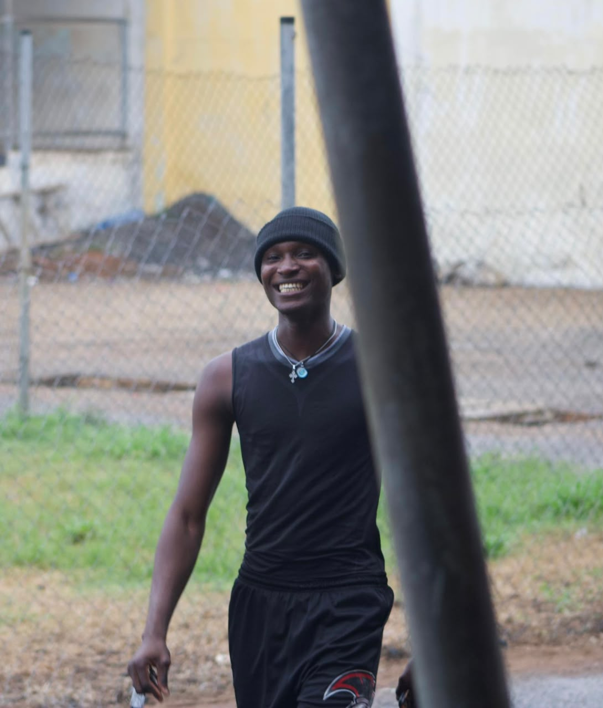

My name is Razak Yidana Jalil and I am a student of Wisconsin International University College, Ghana.
I am passionate about technology, sports, and personal growth.
I am currently learning Web Development, using tools like VS Code and GitHub Desktop.
I believe in discipline, hard work, and balancing academics with athletics.
Basketball is my main sport. It has taught me teamwork, focus, and leadership on and off the court.
When I am not playing basketball, I love to swim to stay fit and clear my mind.
I also run marathons because I enjoy challenging my limits and pushing for endurance.
Sports keeps me disciplined and motivates me in my studies too.
As a student at Wisconsin International University College, I am committed to excellence.
My goal is to become skilled in technology and use it to solve real problems in Ghana and beyond.
| Category | Details |
|---|---|
| Full Name | Razak Yidana Jalil |
| University | Wisconsin International University College |
| Main Sport | Basketball Player |
| Other Hobbies | Swimming, Marathon Running |
| Tech Skills | HTML, GitHub, XAMPP |
| Goal | To be a Tech-Savvy Professional & Athlete |